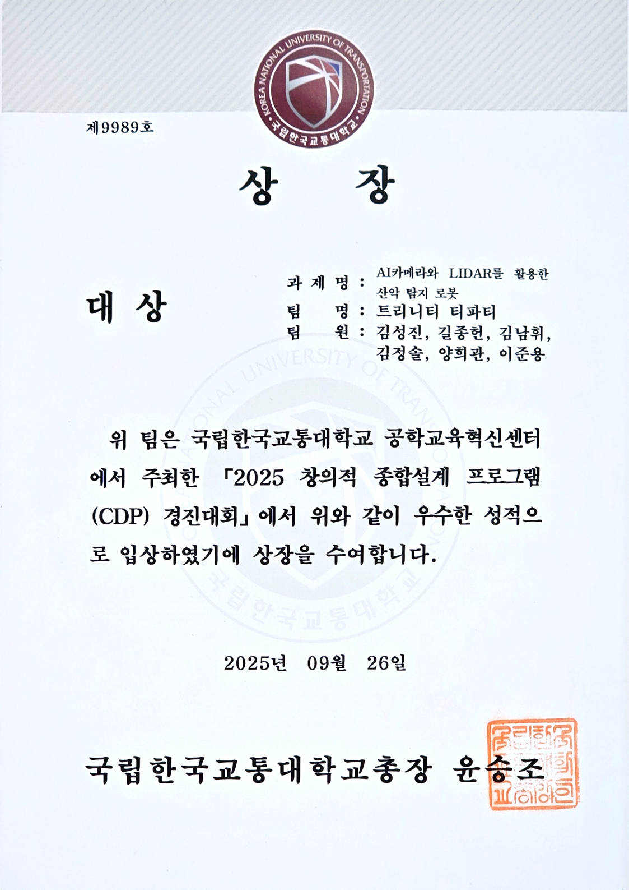
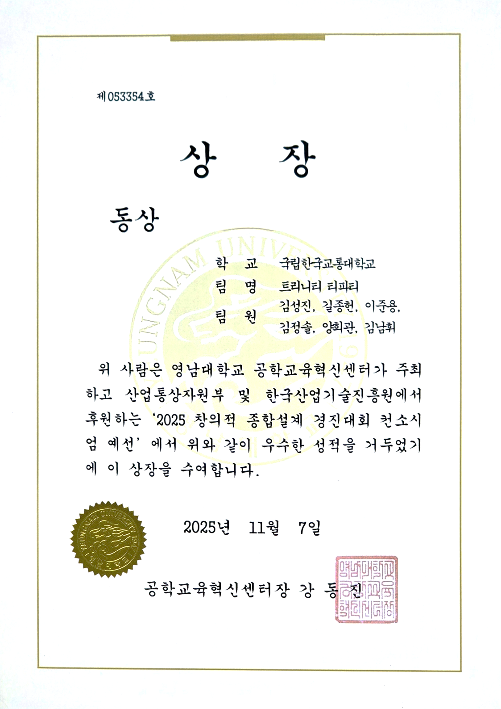
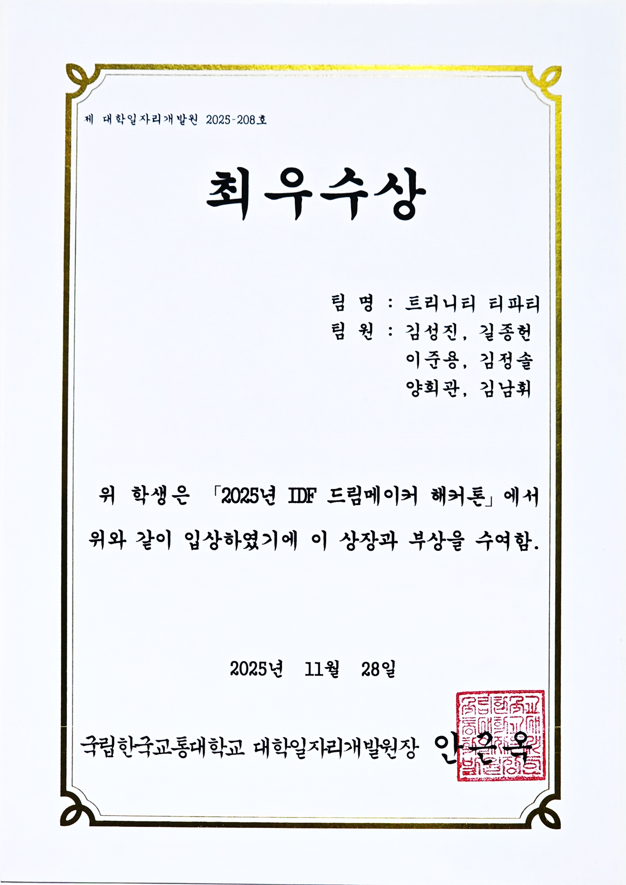
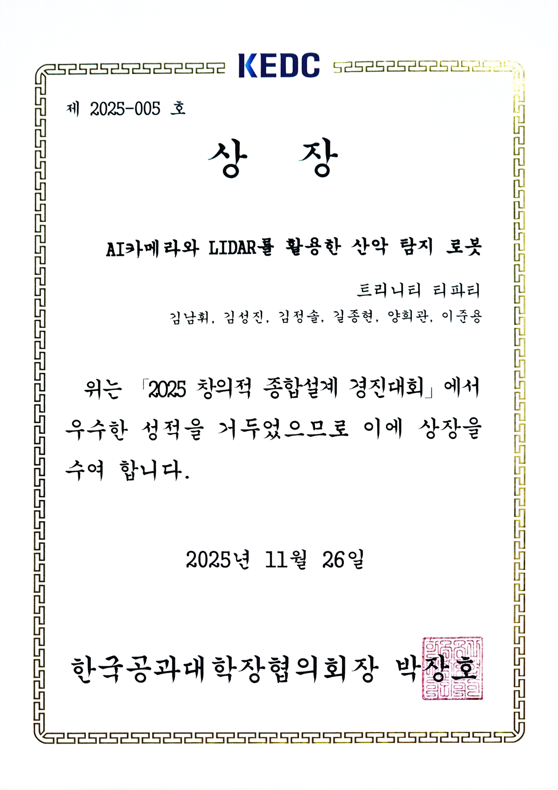
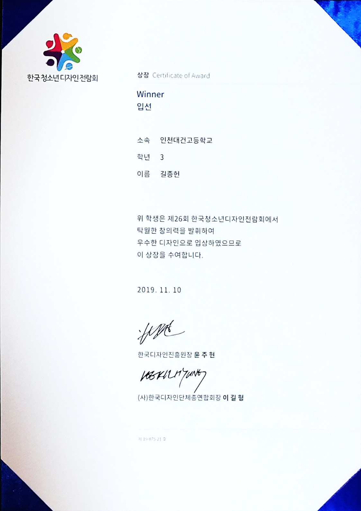
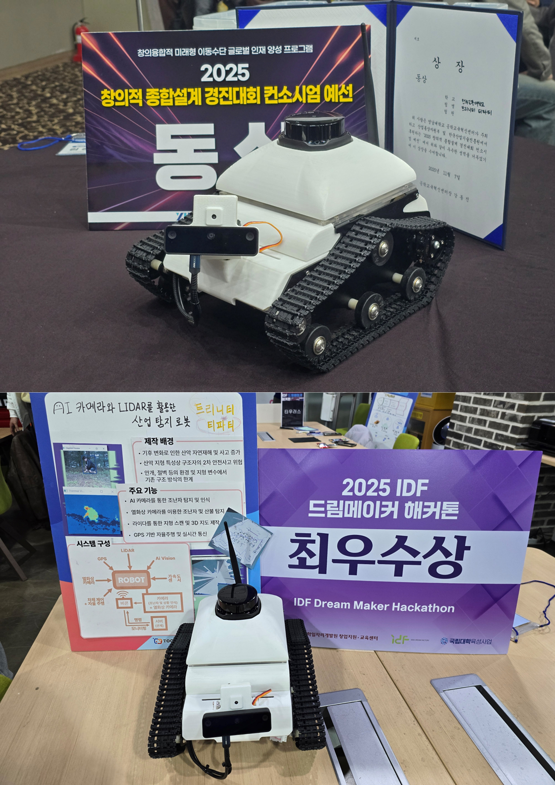

Profile Summary
Proto.KIL은 한국교통대학교 기계공학과에서 기계 설계와 로봇 시스템 구현을 중심으로 프로젝트를 수행해왔습니다. 특히 농구 슈팅 로봇, LiDAR 기반 매핑 로봇, 라인트레이싱 로봇, 센서 기반 연구 경험을 통해 단순한 설계 결과물이 아니라 실제 환경에서 동작하는 시스템을 만드는 과정에 집중했습니다.
포트폴리오에서는 결과물보다 문제 정의, 시행착오, 구조적 선택, 개선 과정을 중심으로 정리했습니다.
기계공학 기반의 설계 역량과 임베디드/비전/ROS 프로젝트 경험을 바탕으로, 아이디어를 CAD 모델과 하드웨어, 제어 로직, 테스트 결과까지 연결하는 엔지니어를 지향합니다.
Proto.KIL은 한국교통대학교 기계공학과에서 기계 설계와 로봇 시스템 구현을 중심으로 프로젝트를 수행해왔습니다. 특히 농구 슈팅 로봇, LiDAR 기반 매핑 로봇, 라인트레이싱 로봇, 센서 기반 연구 경험을 통해 단순한 설계 결과물이 아니라 실제 환경에서 동작하는 시스템을 만드는 과정에 집중했습니다.
포트폴리오에서는 결과물보다 문제 정의, 시행착오, 구조적 선택, 개선 과정을 중심으로 정리했습니다.
Proto.KIL의 관심 분야는 로봇 하드웨어, 기구 설계, 센서 통합, 자율주행 로봇 시스템입니다. 제품이 실제로 움직이기 위해 필요한 구조, 전장, 제어, 테스트 조건을 함께 고려하는 엔지니어를 지향합니다.
각 프로젝트는 단순한 결과물 소개가 아니라, 제작 이유와 문제 해결 과정을 중심으로 정리했습니다.
숙련도는 과장된 “상·중·하”가 아니라, 프로젝트에서 실제로 사용했고 면접에서 설명 가능한 범위를 기준으로 표시했습니다.
핵심 구현·구조 선택·한계 설명 가능
프로젝트에 직접 적용하고 설명 가능
참고 자료 기반으로 이해·수정 가능
로봇과 장비의 전체 어셈블리, 부품 배치와 간섭 검토, 브라켓·툴헤드·센서 마운트 및 동작 메커니즘을 설계하고 실제 조립 결과를 반영해 반복 개선.
CNC 외주 제작을 위한 부품 도면을 작성하고, 치수와 가공 정보를 정리해 실제 제작으로 연결.
센서 입력, 모터 제어, 릴레이, 시리얼 통신, millis 기반 비차단 로직 구현.
기구 구조, 전원, 센서, 제어 보드와 소프트웨어를 하나의 시스템으로 통합하고 조립·테스트 과정의 문제를 구분해 개선.
USB 카메라와 OpenCV 실행 환경, Arduino 시리얼 연동, 전원·발열 조건을 포함한 임베디드 비전 시스템 구성.
PCA9685 기반 다중 서보 제어, 엔코더 속도 피드백과 PID 제어를 슈팅·정렬·주행 동작에 적용.
Raspberry Pi/PC와 Arduino 간 명령 전달, Shoot 트리거, cmd_vel 전달 구조 구현.
간단한 프로토타입 회로와 연구용 Lock-in Amplifier PCB, Delta 툴헤드 PCB를 설계하고 외주 제작·동작 테스트 수행.
OpenCV 처리, 카메라 입력, 조건 판단, 시리얼 연동 중심의 프로젝트 코드 작성.
HSV, Canny, contour, 사각형 후보 검출, 중심 좌표 안정화 로직 구현.
팀 프로젝트에서 커스텀 데이터 학습, 에폭 조정과 카메라 추론 테스트 과정을 경험하고 임베디드 환경의 성능 한계를 확인.
전공 수업과 반복적인 환경 구축을 통해 LiDAR 스캔, RViz 시각화와 cmd_vel 흐름을 학습.
VOCs의 ppb 수준 검출을 목표로 한 Photoacoustic Gas Sensor 연구에 참여했습니다. ppb 수준 검출을 위한 센서의 기계 구조물을 설계·적용하고, Pre-amplifier, Band-pass Filter, Lock-in Amplifier 기반 신호 처리 회로를 다뤘습니다. 위상 조절과 Phase Sensitive Detection을 통해 미세 광음향 신호에서 잡음을 줄이고 유효 신호를 분리하는 과정을 연구했습니다. 연구 장치 제작 과정에서 CNC 외주 도면 작성, 회로도·PCB 설계, 외주 제작과 보드 테스트를 수행했습니다.
한국교통대학교 논문집 제60집 · 제1저자 · 2025
농구 골대 인식과 슈팅 메커니즘을 결합한 농구 슈팅 로봇을 설계하고 제작했습니다. 비전 인식, Arduino 제어, 서보 구동, 기구 설계를 통합했습니다.
산악 환경에서의 탐지와 구조 활동 보조를 목표로 LiDAR, AI Depth Camera와 열화상 카메라를 결합한 이동 로봇 프로토타입을 개발했습니다. 팀은 센서별 탐지와 매핑 기능을 구현했으며, Proto.KIL은 기계 설계와 하드웨어 통합을 담당했습니다. SLAM 기반 자율주행은 완성하지 못했습니다. 다양한 전공의 팀원들과 협업한 결과 교내 대상·최우수상, 교외 동상 및 표창장을 수상했습니다.






프로젝트 자료, 시연 영상, CAD 이미지와 코드 설명은 공개 가능한 범위 내에서 제공하겠습니다.